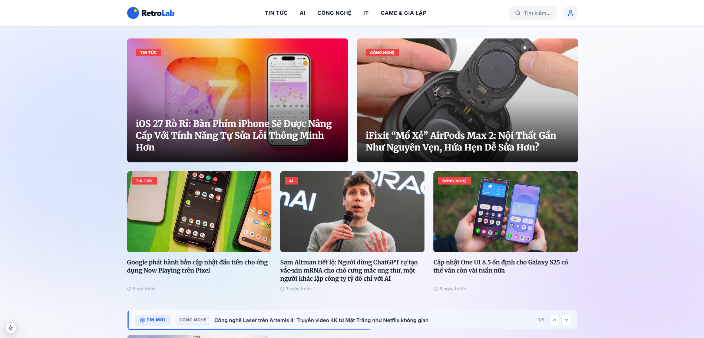
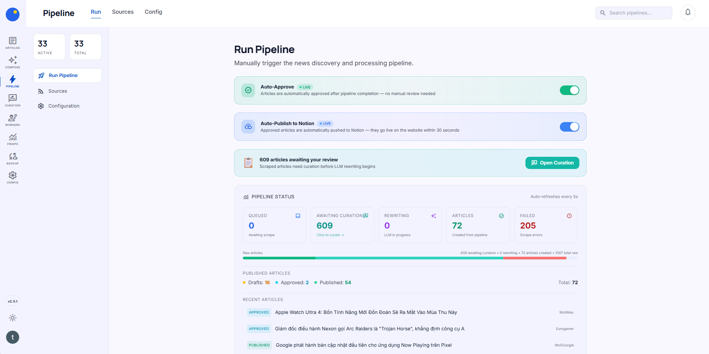
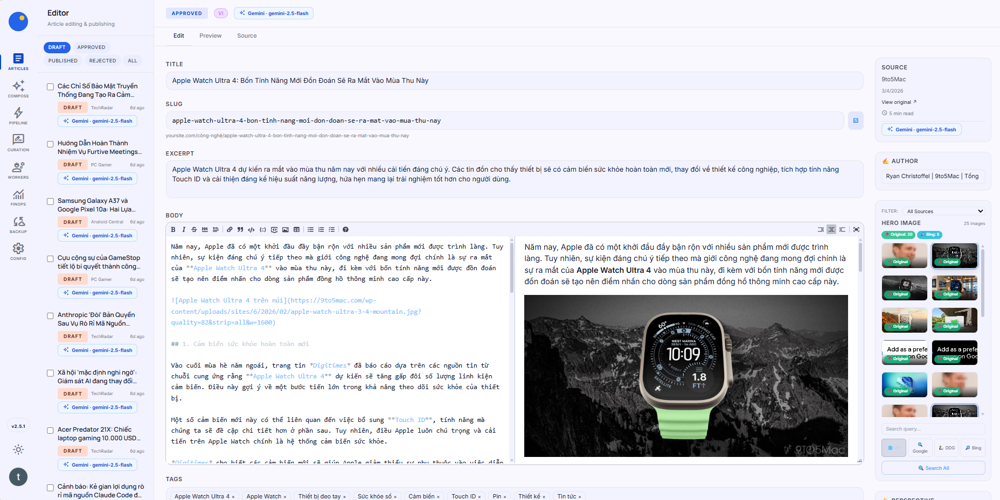
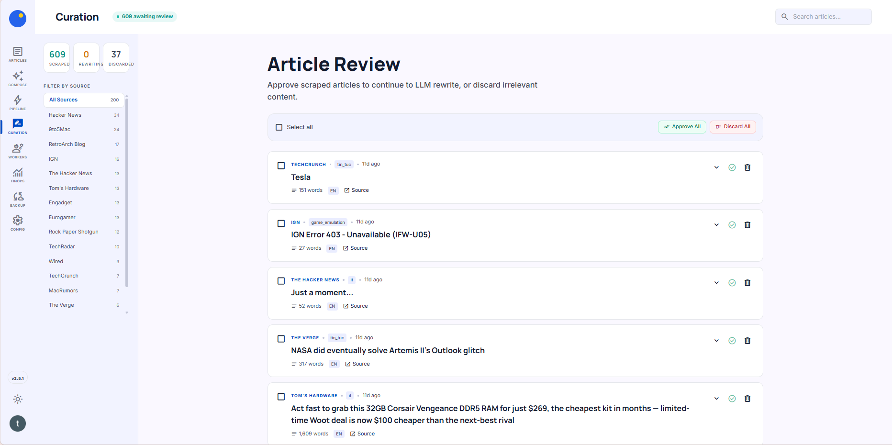
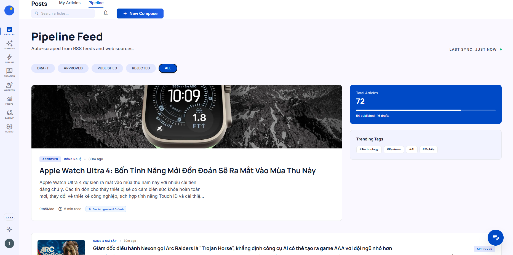
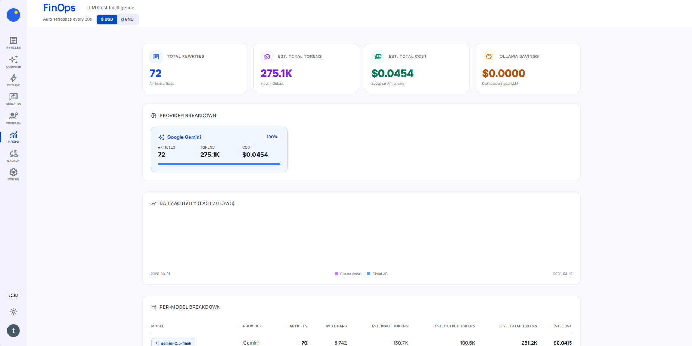

An automated, AI-driven digital media platform designed to capture the Vietnamese tech news market. By treating traditional editorial workflows as a scaling problem, RetroLab maximizes content output to 50+ articles daily while driving operational costs to near zero with a custom multi-provider LLM pipeline.

Vietnamese tech enthusiasts lack a high-quality, centralized source of international technology news in their native language. Existing solutions rely on manual translation, are slow to update, and provide fragmented coverage.
Tech news is highly perishable. By the time human editors translate a breaking story from English to Vietnamese, the 12-hour delay renders the article obsolete and kills SEO potential.
Scaling a traditional localized media site requires hiring armies of translators. The human cost per article destroys profitability, making high-volume coverage financially impossible.
Editors waste hours manually scouring dozens of fragmented international feeds (The Verge, TechCrunch) just to decide what to write about, bottlenecking actual production.
A deep dive into the key capabilities that make this platform tick.
To make AI-generated content profitable, I designed a cost-aware AI strategy. Routine tasks (like categorization and tagging) are dynamically routed to free or local models, reserving paid, premium APIs strictly for complex, quality-critical rewriting.

Instead of building a custom backend UI that editors had to learn, I strategically integrated Notion as the primary database. This enterprise-grade infrastructure reduced server overhead to zero and completely eliminated onboarding friction for the editorial team.

The custom pipeline handles automated localization instantly. English-language source articles are culturally adapted for Vietnamese readers, transforming a multi-hour manual translation process into a single-click "Approve" workflow for human editors.

Each technology was selected to solve a specific product constraint — not just because it was popular.
RSS Feeds & Web Crawlers
Scraper → Rewriter → Image
Gemini / Claude / Ollama
Content Storage & API
SSR Public Frontend
Chosen for server-side rendering. Critical for SEO performance in the competitive media space.
Chosen to eliminate editor onboarding time. Zero training needed for a tool they already use daily.
Multi-provider strategy to avoid vendor lock-in and dynamically route tasks to the cheapest capable model.
Chosen for resilient async task queuing. Ensures the pipeline never blocks on slow LLM API calls.
Chosen for reproducible, zero-downtime deployments on a single VPS. Keeping infrastructure costs near zero.
Chosen as the source-of-truth for pipeline state and FinOps metrics. Enabling reliable cost analytics.
Behind retrolab.com.vn, the entire editorial operation runs on three interconnected systems. Each one was designed to eliminate a specific bottleneck in the content lifecycle.

The pipeline autonomously scrapes 15+ international RSS feeds, deduplicates content, and queues articles for processing. But full automation without oversight is reckless. The Curation Queue is a deliberate design choice: a single human decision point where an editor reviews, approves, or discards each article in one click before the AI rewriting engine takes over. This is the "human-in-the-loop" pattern that ensures editorial integrity at scale.

Proving the pipeline works is step one. Proving it's profitable is step two. The FinOps dashboard tracks per-model token spend across Gemini and Claude in real time, breaking down cost-per-article to the fraction of a cent. This is the tool that answers the single most important PM question: "At $0.001 per article, is the AI pipeline cheaper than hiring one junior editor?" The answer drives every routing decision in the system.
After an article clears the pipeline and passes curation, it arrives here. The editor provides a split-screen Markdown environment with live preview, inline AI-assisted rewriting, and one-click publish directly to Notion. By syncing with the Notion API as the content store, there is zero database hosting cost and zero onboarding friction — editors work in a tool they already know.
Key results that demonstrate the platform's effectiveness and efficiency.
Automated pipeline processes and publishes 50+ articles daily from 15+ international sources without manual intervention.
From source article detection to fully localized, SEO-optimized Vietnamese content published on the live site.
Multi-provider LLM routing and free-tier optimization drive per-article cost to a fraction of a cent.
Only the curation step requires human input. Everything else from discovery to publishing is fully automated.
Served as the sole Product Manager and Technical Architect, driving the platform from initial concept to live deployment.
Visit retrolab.com.vn to experience the fully automated platform firsthand.